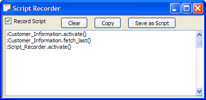

Script Recorder
The Script Recorder records your actions as you use Alpha Five and it writes the Xbasic code that corresponds to your actions. Not every action that you perform interactively with Alpha Five is recorded, but most actions are recorded. It is an excellent way to learn Xbasic.
Accessing the Script Recorder from the View Menu
To use the Script Recorder:
Select View > Script Recorder Window from the Alpha Five menu. This displays the Script Recorder window.

Check the Record Script check box to turn recording on or off. When this box is checked, Alpha Five records most of your actions as Xbasic. You can turn the recorder on or off at will.
Run the Alpha Five commands that you want to record.
Return to the Script Recorder window and uncheck the Record Script check box.
You can then copy commands from the Script Recorder window into your Xbasic programs.
See Also
Setting the Script Recording Level, Storing Scripts in a Library, Attaching a Library to the Current Database